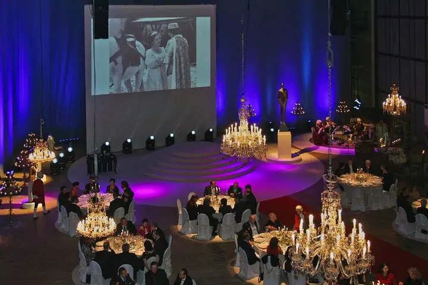
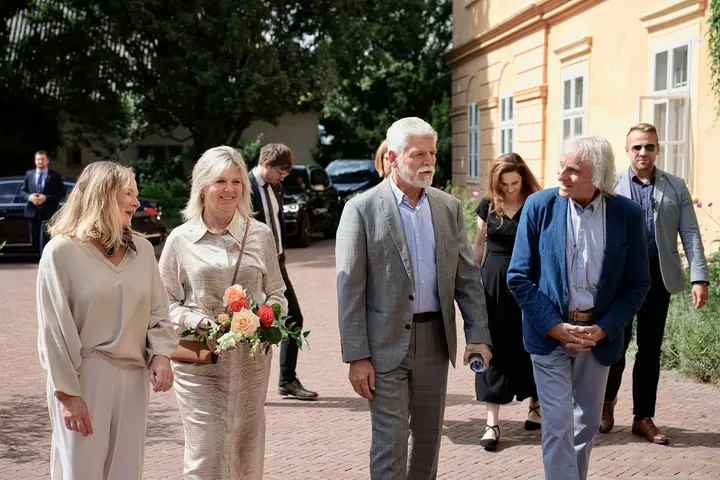
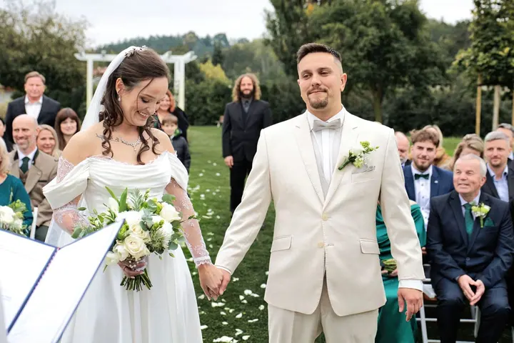
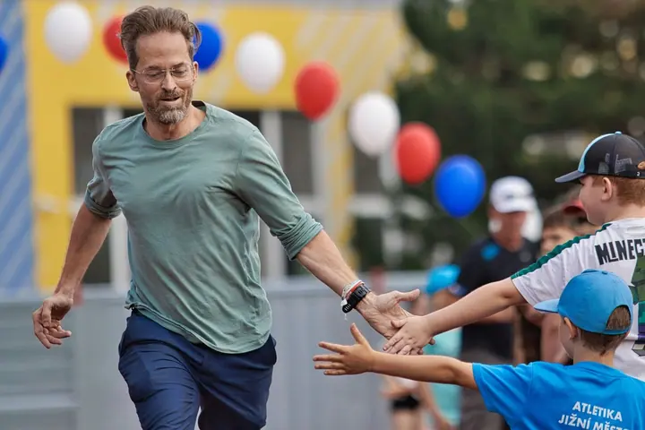
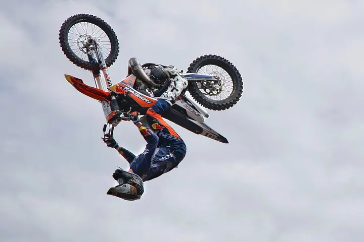
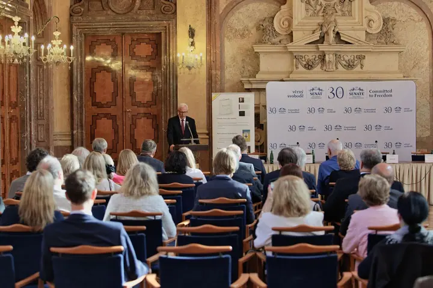
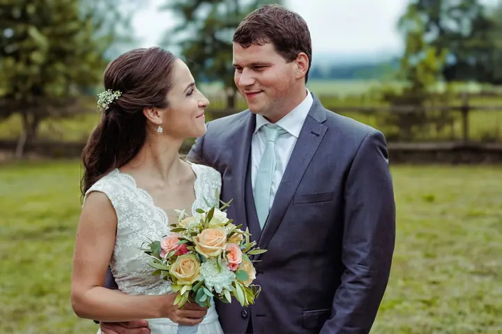
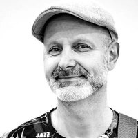

01 / 04
Firemní akce a eventy
Konference, kulturní a společenské události, koncerty i reprezentativní akce pro firmy, města a instituce. Pohybuji se diskrétně a hlídám hlavní momenty, důležité hosty i detaily.
Zeptat se na termín→








Fotím lidi, události, práci i prostředí
Zeptat se na termín →(01) Ahoj
Jmenuji se Karel Werner a věnuji se dokumentární fotografii lidí. Fotím firemní akce a konference , svatby i sportovní události . Sídlím v Čestlicích u Prahy a za dobrým příběhem rád přijedu kamkoliv v České republice.
(02) Co fotím
01 / 04
Konference, kulturní a společenské události, koncerty i reprezentativní akce pro firmy, města a instituce. Pohybuji se diskrétně a hlídám hlavní momenty, důležité hosty i detaily.
Zeptat se na termín→02 / 04
Dokumentární svatební fotografie od ranních příprav až po večerní oslavu. Pohledy, doteky, smích, nervozita i dojetí, bez nutnosti pózovat.
Zeptat se na termín→03 / 04
Fotím sportovní utkání a akce, od dětských turnajů po motorkářské exhibice. Hlídám rozhodující momenty i emoce hráčů a diváků.
Zeptat se na termín→Dále nabízím
Fotografuji starší lidi doma, kde se cítí nejlépe. Na snímcích nezůstane jen člověk, ale i jeho křeslo, zahrada nebo dílna.
↗(04) Postup
Od první zprávy po hotovou galerii.
Krok 1 z 4
Na úvodní schůzce projdeme plán akce nebo vašeho dne, očekávání i cílové použití fotografií. Probereme rozsah, timing a to, co je pro vás nejdůležitější.
Krok 2 z 4
Pohybuji se diskrétně, respektuji program a přizpůsobuji se prostoru. Hlídám hlavní momenty, reakce lidí i detaily, které by neměly uniknout.
Krok 3 z 4
Fotografie pečlivě vyberu a upravím. Každý snímek prochází autorskou postprodukcí.
Krok 4 z 4
Výsledné fotografie najdete v přehledné online galerii, kterou zpřístupním na 14 dní. Můžete si je v klidu projít, stáhnout a sdílet.
Fotím ve chvíli, kdy nastane ten správný moment.
(05) Za objektivem
Při zakázkách se soustředím na přirozené momenty, atmosféru a fotografie, které mají pro vás skutečné využití, ať už pro web, sociální sítě, média nebo vlastní prezentaci. Do děje vstupuji co nejméně a fotografuji až ve chvíli, kdy nastane ten správný moment.
Působím především v Praze a ve Středočeském kraji, nejčastěji v okolí Průhonic, Nupak, Uhříněvsi a Říčan. Za zakázkami ale běžně dojíždím i do dalších částí republiky.
Vedle zakázkové práce se věnuji také autorské fotografii. Mé fotografie byly vystaveny na několika výstavách a získaly ocenění v mezinárodních soutěžích. Jsem držitelem fotografického titulu AFIAP.

Karel
Karel Werner · Fotograf firemních akcí, svateb a sportu
Sídlím v Čestlicích a fotím hlavně v Praze a ve Středočeském kraji. Za zakázkami ale běžně dojíždím kamkoliv v České republice.
Ano. Fotografie můžete využít pro web, sociální sítě, média, tisk, prezentace i interní komunikaci, bez řešení dalších povolení pro běžnou prezentaci.
Ano, v případě potřeby lze část snímků dodat přednostně ještě krátce po akci.
Ze svatby předávám ucelený dokumentární soubor více než 350 fotografií v archivační kvalitě. Svatebnímu dni se věnuji celý, 12 a více hodin, dokud oslava skutečně neskončí.
(07) Kontakt
Napište pár vět o tom, co si představujete, a termín, který se vám hodí.